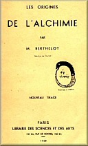
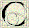
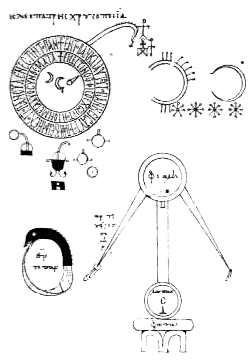

Livre I : Les origines de l'alchimie


e livre, d'un caractère historique et philosophique, a été exécuté d'après les manuscrits grecs inédits de la Bibliothèque nationale de France : la véritable doctrine des alchimistes et leurs idées théoriques sur l'unité de la matière s'y trouvent éclaircies et exposées pour la première fois. Les deux premières livraisons qui renferment une Introduction historique de près de 300 pages, ont paru en 1887 et 1888. Les appareils et les pratiques expérimentales des vieux alchimistes y sont exposés et éclaircis : c'est toute une branche de la science antique qui reparaît ainsi au jour.Comme suite et développement de cet ouvrage, Berthelot publiera un peu plus tard, avec la collaboration de Charles-Émile Ruelle, la Collection des anciens alchimistes grecs (demeurée jusqu'alors inédite) qui comprend une importante introduction formant en elle-même un traité, des traités démocritains (Démocrite, Synésius, Olympiodore) et des textes grecs (traductions, variantes, notes et commentaires).
 Introduction de Berthelot
Introduction de Berthelot
 a chimie est née d'hier : il y a cent ans à peine qu'elle a pris la forme d'une science moderne. Cependant les progrès rapides qu'elle a faits depuis ont concouru, plus peut-être que ceux d'aucune autre science, à transformer l'industrie et la civilisation matérielle, et à donner à la race humaine sa puissance chaque jour croissante sur la nature. C'est assez dire quel intérêt présente l'histoire des commencements de la chimie. Or ceux-ci ont un caractère tout spécial : la chimie n'est pas une science primitive, comme la géométrie ou l'astronomie ; elle s'est constituée sur les débris d'une formation scientifique antérieure ; formation demi-chimérique et demi-positive, fondée elle-même sur le trésor lentement amassé des découvertes pratiques de la métallurgie, de la médecine, de l'industrie et de l'économie domestique. Il s'agit de l'alchimie, qui prétendait à la fois enrichir ses adeptes en leur apprenant à fabriquer l'or et l'argent, les mettre à l'abri des maladies par la préparation de la panacée, enfin leur procurer le bonheur parfait en les identifiant avec l'âme du monde et l'esprit universel. L'histoire de l'alchimie est fort obscure. C'est une science sans racine apparente, qui se manifeste tout à coup au moment de la chute de l'empire romain et qui se développe pendant tout le Moyen-Age, au milieu des mystères et des symboles, sans sortir de l'état de doctrine occulte et persécutée : les savants et les philosophes s'y mêlent et s'y confondent avec les hallucinés, les charlatans et parfois même avec les scélérats. Cette histoire mériterait d'être abordée dans toute son étendue par les méthodes de la critique moderne. Sans entreprendre une aussi vaste recherche qui exigerait toute une vie de savant, je voudrais essayer de percer le mystère des origines de l'alchimie et montrer par quels liens elle se rattache à la fois aux procédés industriels des anciens égyptiens, aux théories spéculatives des philosophes grecs et aux rêveries mystiques des alexandrins et des gnostiques.
a chimie est née d'hier : il y a cent ans à peine qu'elle a pris la forme d'une science moderne. Cependant les progrès rapides qu'elle a faits depuis ont concouru, plus peut-être que ceux d'aucune autre science, à transformer l'industrie et la civilisation matérielle, et à donner à la race humaine sa puissance chaque jour croissante sur la nature. C'est assez dire quel intérêt présente l'histoire des commencements de la chimie. Or ceux-ci ont un caractère tout spécial : la chimie n'est pas une science primitive, comme la géométrie ou l'astronomie ; elle s'est constituée sur les débris d'une formation scientifique antérieure ; formation demi-chimérique et demi-positive, fondée elle-même sur le trésor lentement amassé des découvertes pratiques de la métallurgie, de la médecine, de l'industrie et de l'économie domestique. Il s'agit de l'alchimie, qui prétendait à la fois enrichir ses adeptes en leur apprenant à fabriquer l'or et l'argent, les mettre à l'abri des maladies par la préparation de la panacée, enfin leur procurer le bonheur parfait en les identifiant avec l'âme du monde et l'esprit universel. L'histoire de l'alchimie est fort obscure. C'est une science sans racine apparente, qui se manifeste tout à coup au moment de la chute de l'empire romain et qui se développe pendant tout le Moyen-Age, au milieu des mystères et des symboles, sans sortir de l'état de doctrine occulte et persécutée : les savants et les philosophes s'y mêlent et s'y confondent avec les hallucinés, les charlatans et parfois même avec les scélérats. Cette histoire mériterait d'être abordée dans toute son étendue par les méthodes de la critique moderne. Sans entreprendre une aussi vaste recherche qui exigerait toute une vie de savant, je voudrais essayer de percer le mystère des origines de l'alchimie et montrer par quels liens elle se rattache à la fois aux procédés industriels des anciens égyptiens, aux théories spéculatives des philosophes grecs et aux rêveries mystiques des alexandrins et des gnostiques.
 Sommaire
Sommaire

Origines mystiques- Sources gnostiques
- Témoignages historiques
- Démocrite
- Les faits
- Les métaux chez les Égyptiens
- Introduction
- L'or
- L'argent
- L'électrum ou asem
- Le saphir ou chesbet
- L'émeraude ou mafek
- L'airain et le cuivre
- Le fer
- Le plomb
- L'étain
- Le mercure
- Autres substances congénères des métaux
- Liste alchimique des métaux et de leurs dérivés
- Les laboratoires
- La teinture des métaux
- Les théories
- Théorie grecque
- Introduction
- Premiers philosophes naturalistes
- Les Platoniciens et le Timée
- Les alchimistes grecs
- Théories des alchimistes et théories modernes
- Le mercure des philosophes
- Origine et portée des idées alchimiques
- Les corps simples actuels
- L'unité de la matière
- Les multiples de l'hydrogène et les éléments
- Éléments isomères et polymères
- Famille naturelle des éléments
- Séries périodiques
- Matière première une et multiforme
- Matière pondérable et fluide éthéré
 Internet
Internet
Une version électronique de ce livre est consultable sur gallica.bnf.fr.
Une version texte est téléchargeable en cliquant sur ce livre : &


Accueil · Biographie · Livre I · Livre II · Livre III